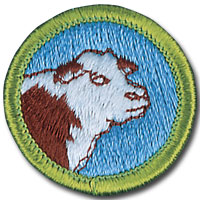

Animal Science - In-Person Class Notes
Please arrive with ample time prior to the start time of your class for registration. Remember, there will be others checking in as well that registration may take a little time, depending on the size of the class and the event held in conjunction with the class.
Your Scout uniform is required to be worn when attending this merit badge session. If you have any additional questions, please feel free to contact Brian Reiners (Scoutmater Bucky) via email at scoutmasterbucky@yahoo.com or on the phone at 612-483-0665.
Reviewing the merit badge pamphlet PRIOR to attending and doing preparation work will ensure that Scouts get the most out of these class opportunities. The merit badge pamphlet is a wealth of information that can make earning a merit badge a lot easier. It contains many of the answers and solutions needed or can at least provide direction as to where one can find the answers.
It is NOT acceptable to come unprepared to a Scoutmaster Bucky event. You can (and should) use the Scoutmaster Bucky Animal Science Merit Badge Workbook to help get a head start and organize your preparation work. Please note that the use of any workbook is merely for note taking and reference. Completion of any merit badge workbook does not warrant, guarantee, or confirm a Scout's completion of any merit badge requirements.
It should be noted that this merit badge class is not meant for those who just want to come and see what they can get done. It is possible to complete this merit badge by being properly prepared and having done the preparation work prior to the class. Preparation is a MUST! If you are not willing to participate to these expectations and standards, perhaps the Scoutmaster Bucky opportunity is not for you.
Things to remember to bring for this merit badge class:
- Merit badge blue card properly filled out and signed off by your Scoutmaster
- Animal Science Merit Badge Pamphlet
- Scout uniform
- Supporting documentation or project work pertinent to the Animal Science merit badge, which may also include a merit badge workbook for reference with notes
- A positive Scouting focus and attitude
Please read and understand the Scoutmaster Bucky Blue Card Process.
Animal Science - Online Class Notes
Please arrive with ample time prior to the start time of your class to ensure your connection to the online session is working properly. Ask people in your household to refrain from unnecessary internet usage, including but not limited to: streaming videos, online gaming, and other heavy bandwidth usage.
You will receive a link 12 to 24 hours before the class start time. Notification will come through the email address provided during the registration process, so please make sure you enter your email correctly.
Your Scout Uniform is required to be worn when attending this Online Merit Badge session. If you have any additional questions, please feel free to contact Brian Reiners; Scoutmaster Bucky via email at scoutmasterbucky@yahoo.com or on the phone at 612-483-0665.
Reviewing the Merit Badge Pamphlet PRIOR to attending and doing preparation work will insure that Scouts get the most out of these online class opportunities. The Merit Badge Pamphlet is a wealth of information that can make earning a Merit Badge a lot easier. It contains many of the answers and solutions needed or can at least provide direction as to where one can find the answers.
It is NOT acceptable to come unprepared to a Scoutmaster Bucky event. You can (and should) use the Scoutmaster Bucky American Business Merit Badge Workbook to help get a head start and organize your preparation work. Please note that the use of any workbook is merely for note taking and reference. Completion of any Merit Badge Workbook does not warrant, guarantee, or confirm a Scouts completion of any merit badge requirement(s). You can download the Scoutmaster Bucky Animal Science Merit Badge Workbook for taking notes to help you prepare.
It should be noted that this Merit Badge class is not meant for those who just want to come and see what they can get done. It is possible to complete this Merit Badge by being properly prepared and having done the preparation work prior to the class. Preparation is a MUST! If you are not willing to participate to these expectations and standards, perhaps the Scoutmaster Bucky opportunity is not for you.
Animal Science
Merit Badge
2020 Scouts BSA Requirements

Please make sure you read the top portion of this page for general participation expectations in a Scoutmaster Bucky merit badge class.
Pay careful attention to the action verbs within the requirements. An example to note:
"Tell", "explain", "describe", and "discuss" are commonly used and will require the Scout to perform these actions during the class. When these action verbs are a part of any requirement, Scouts are expected to be prepared to share. Reading responses is not acceptable since it does not fulfill the requirement of showing the Scout's knowledge and understanding.
1.
Name four breeds of livestock in each of the following classifications: horses, dairy cattle, beef cattle, sheep, hogs. Tell their principal uses and merits. Tell where the breeds originated.
2.
List five diseases that afflict the animals in each of the classifications in requirement 1. Also list five diseases of poultry. Describe the symptoms of each disease and explain how each is contracted and how it could be prevented.
3.
Explain the differences in the digestive systems of ruminants, horses, pigs, and poultry. Explain how the differences in structure and function among these types of digestive tracts affect the nutritional management of these species.
4.
Select one type of animal-beef cow, dairy cow, horse, sheep, goat, or hog, or a poultry flock-and tell how you would properly manage it. Include in your discussion nutritional (feeding) concerns, housing, disease prevention, waste control/removal, breeding programs, and biosecurity as appropriate.
5.
Explain the importance of setting clear goals for any animal breeding program. Tell how purebred lines of animals are produced. Explain the practice of crossbreeding and the value of this practice.
6.
Complete ONE of the following options:
PLEASE NOTE: For Requirement #6 when attending a Scoutmaster Bucky class, the option to prepare for will be noted within the registration information of the class. If you are uncertain which option will be covered within the class, please ask for clarification. Scouts will be expected to have prepared the appropriate components of the Requirement #6 option that is designated for the the class. In-person classes are usually focused specifically on one these options specifically and the counselor may not be serving this merit badge for all options listed.
Some counselors however may be able to accommodate all options, so please pay close attention to the class offering, and ask for clarification if you are uncertain.
Beef Cattle Option
(a)
Visit a farm or ranch where beef cattle are produced under any of these systems:
(1)
Feeding market cattle for harvest
(2)
Cow/calf operation, producing cattle for sale to commercial feeders
(3)
Producing purebred cattle for sale as breeding stock to others
Talk with the operator to learn how the cattle were handled, fed, weighed, and shipped. Describe what you saw and explain what you learned. If you cannot visit a cattle ranch or farm, view a video from a breed association, or research the Internet (with your parent's permission) for information on beef cattle production. Tell about your findings.
Scouts should bring proof (a note signed by the host, your parent, teacher, Scoutmaster, or other) to help validate their completion of the visit noted in this requirement. Ideally the note could/should be signed by the operator of the farm or ranch visited.
Scouts choosing to view a video or review information from the internet for this requirement component, will need to be able to share the link(s) with the counselor who will determine whether the resources utilized fulfill the requirement to their satisfaction.
(b)
Sketch a plan of a feedlot to include its forage and grain storage facilities, and loading chute for 30 or more fattening steers; or sketch a corral plan with cutting and loading chutes for handling 50 or more beef cows and their calves at one time.
(c)
Make a sketch showing the principal wholesale and retail cuts of beef. Tell about the U.S. Department of Agriculture (USDA) dual grading system of beef. Tell the basis of each grade in each system.
(d)
Define the following terms: bull, steer, bullock, cow, heifer, freemartin, heiferette, calf.
Dairying Option
(a)
Tell how a cow or a goat converts forage and grain into milk. Explain the differences in feeds typically used for dairy cows versus those fed to beef cows.
(b)
Make a chart showing the components in cow's milk or goat's milk. Chart the amount of each component.
(c)
Explain the requirements for producing grade A milk. Tell how and why milk is pasteurized.
(d)
Tell about the kinds of equipment used for milking and the sanitation standards that must be met on dairy farms.
(e)
Define the following terms: bull, cow, steer, heifer, springer; buck, doe, kid.
(f)
Visit a dairy farm or a milk processing plant. Describe what you saw and explain what you learned. If you cannot visit a dairy farm or processing plant, view a video from a breed or dairy association, or research the Internet (with your parent's permission) for information on dairying. Tell about your findings.
Scouts should bring proof (a note signed by the host, your parent, teacher, Scoutmaster, or other) to help validate their completion of the visit noted in this requirement. Ideally the note could/should be signed by the operator of the farm or plant visited.
Scouts choosing to view a video or review information from the internet for this requirement component, will need to be able to share the link(s) with the counselor who will determine whether the resources utilized fulfill the requirement to their satisfaction.
Horse Option
(a)
Make a sketch of a useful saddle horse barn and exercise yard.
(b)
Tell about the history of the horse and the benefits it has brought to people. Using the four breeds of horses you chose in requirement 1, discuss the different special uses of each breed.
(c)
Define the following terms: mare, stallion, gelding, foal, colt, filly; mustang, quarter horse, draft horse, pacer, trotter; pinto, calico, palomino, roan, overo, tobiano.
(d)
Visit a horse farm. Describe what you saw and explain what you learned. If you cannot visit a horse farm, view a video from a breed association, or research the Internet (with your parent's permission) for information on horses. Tell about your findings.
Scouts should bring proof (a note signed by the host, your parent, teacher, Scoutmaster, or other) to help validate their completion of the visit noted in this requirement. Ideally the note could/should be signed by the operator of the farm visited.
Scouts choosing to view a video or review information from the internet for this requirement component, will need to be able to share the link(s) with the counselor who will determine whether the resources utilized fulfill the requirement to their satisfaction.
(e)
Outline the proper feeding of a horse doing light work. Explain why the amount and kind of feed will change according to the kind of horse and the work it does. Describe what colic is, what can cause it, and its symptoms.
Sheep Option
(a)
Make a sketch of a live lamb. Show the location of the various wholesale and retail cuts.
(b)
Discuss how wools are sorted and graded.
(c)
Do ONE of the following:
(1)
Raise a lamb from weaning to market weight. Keep records of feed intake, weight gains, medication, vaccination, and mortality. Present your records to your counselor for review.
If requirement 6c1 is selected, Scouts should bring photos or video to share with the counselor and class showing the raising of their lamb. Bring your records as stated in this requirement to share with the counselor and class.
(2)
Visit a farm or ranch where sheep are raised. Describe what you saw and explain what you learned. If you cannot visit a sheep farm or ranch, view a video from a breed association, or research the Internet (with your parent's permission) for information on sheep. Tell about your findings.
If choosing Requirement 6c2, Scouts should bring proof (a note signed by the host, your parent, teacher, Scoutmaster, or other) to help validate their completion of the visit noted in this requirement. Ideally the note could/should be signed by the operator of the farm or ranch visited.
Scouts choosing to view a video or review information from the internet for this requirement component, will need to be able to share the link(s) with the counselor who will determine whether the resources utilized fulfill the requirement to their satisfaction.
(d)
Describe some differences between the production of purebred and commercial lambs. Then select two breeds that would be appropriate for the production of crossbred market lambs in your region. Identify which breed the ram should be.
(e)
Define the following terms: wether, ewe, ram, lamb.
Hog Option
(a)
Make a sketch showing the principal wholesale and retail cuts of pork. Tell about the recommended USDA grades of pork. Tell the basis for each grade.
(b)
Outline in writing the proper feeding programs used from the breeding of a gilt or sow through the weaning of the litter. Discuss the feeding programs for the growth and finishing periods.
This requirement component clearly states Scouts will need to put into writing their work. Be prepared to share your writing and discuss this during the class.
(c)
Do ONE of the following:
(1)
Raise a feeder pig from weaning to market weight. Keep records of feed intake, weight gains, medication, vaccination, and mortality. Present your records to your counselor for review.
If requirement 6c1 is selected, Scouts should bring photos or video to share with the counselor and class showing the raising of your pig. Bring your records as stated in this requirement to share with the counselor and class.
(2)
Visit a farm where hogs are produced, or visit a packing plant handling hogs. Describe what you saw and explain what you learned. If you cannot visit a hog production unit or packing plant, view a video from a packer or processor, or research the Internet (with your parent's permission) for information on hogs. Tell about your findings.
If choosing Requirement 6c2, Scouts should bring proof (a note signed by the host, your parent, teacher, Scoutmaster, or other) to help validate their completion of the visit noted in this requirement. Ideally the note could/should be signed by the operator of the farm or plant visited.
Scouts choosing to view a video or review information from the internet for this requirement component, will need to be able to share the link(s) with the counselor who will determine whether the resources utilized fulfill the requirement to their satisfaction.
(d)
Define the following terms: gilt, sow, barrow, boar.
Avian Option
(a)
Make a sketch of a layer house or broiler house showing nests, roosts, feeders, waterers, and means of ventilation. Explain how insulation, ventilation, temperature controls, automatic lights, and other environmental controls are used to protect birds from heat, cold, and bad weather.
(b)
Explain why overcrowding is dangerous for poultry flocks.
(c)
Tell about the grading of eggs. Tell how broilers (fryers) are graded. Describe the classes of chicken meat.
(d)
Do ONE of the following:
(1)
Manage an egg-producing flock for five months. Keep records of feed purchased, eggs sold, medication, vaccination, and mortality. Present your records to your counselor for review.
(2)
Raise five chickens from hatching. Keep records of feed intake, weight gains, medication, vaccination, and mortality. Present your records to your counselor for review.
If requirement 6d1 or 6d2 is selected, Scouts should bring photos or video to share with the counselor and class showing their managing of a flock or the raising of chickens. Bring your records as stated in this requirement to class to also share with the counselor and class.
(3)
Visit a commercial avian production facility. Describe what you saw and explain what you learned. If you cannot visit a commercial facility, view a video from a poultry association, or research the Internet (with your parent's permission) for information on poultry production. Tell about your findings.
If choosing Requirement 6d3, Scouts should bring proof (a note signed by the host, your parent, teacher, Scoutmaster, or other) to help validate their completion of the visit noted in this requirement. Ideally the note could/should be signed by the operator of the production facility visited.
Scouts choosing to view a video or review information from the internet for this requirement component, will need to be able to share the link(s) with the counselor who will determine whether the resources utilized fulfill the requirement to their satisfaction.
(e)
Define the following terms: hen, rooster, chick, capon; tom, poult.
7.
Find out about three career opportunities in animal science. Pick one and find out the education, training, and experience required for this profession. Discuss this with your counselor, and explain why this profession might interest you.